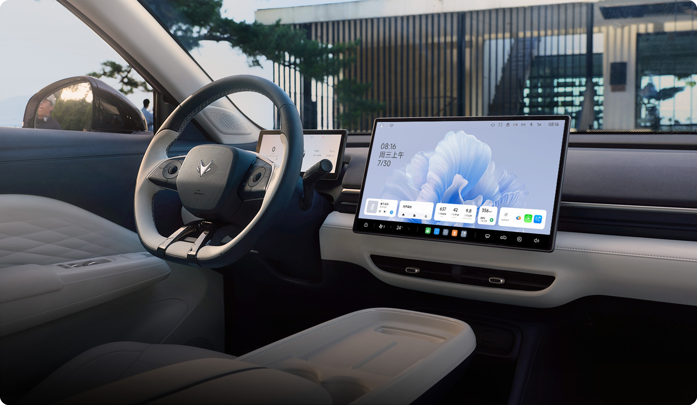
Central Multimídia 15,6"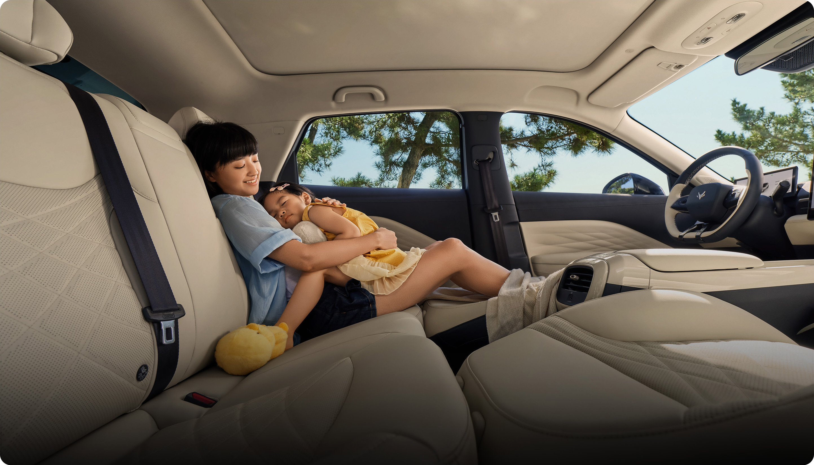
2.770 mm Entre-Eixos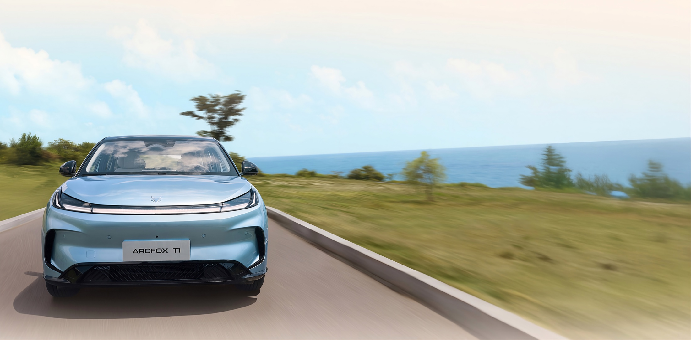
Recarga em 16 minARCFOX T1
Um novo conceito de mobilidade compacto, espaçoso e tecnológico.
///
ESTÚDIO INTERATIVO 360°
Design minimalista em todos os ângulos.
Arraste o veículo para girar em 360° e alterne entre as cores oficiais do novo ARCFOX T1 BEV.

Azul Atlântico
95 cv
Potência 100% elétrica
300 km
Autonomia estimada (até)
16 min
Recarga rápida (140 kW)
459 L
Porta-malas (até 1.352 L)
15,6"
Central multimídia
Assinatura luminosa Full-LED.
Frente aerodinâmica com faixa contínua em LED que impõe presença e identidade futurista em qualquer rodovia.
Compacto por fora, gigante por dentro.
Rodas esportivas aerodinâmicas, teto flutuante bicolor e 2.770 mm de entre-eixos para máximo conforto interno.
Lanternas geométricas em LED 3D.
Design traseiro esculpido com iluminação tridimensional integrada ao acabamento black piano de alto contraste.
Pronto para ir além do horizonte.
Até 300 km de autonomia 100% elétrica e recarga ultrarrápida em apenas 16 minutos para acompanhar o seu ritmo.
///
INTERIOR & TECNOLOGIA
Minimalismo pensado para quem dirige o futuro.
Cabine silenciosa, acabamento refinado e conectividade intuitiva de última geração em cada detalhe do ARCFOX T1.
01
Central Multimídia 15,6"
Interface fluida de alta definição com Apple CarPlay e Android Auto sem fio integrados ao painel minimalista.
02
2.770 mm de Entre-Eixos
Assoalho 100% plano e aproveitamento inteligente de espaço que entrega conforto de categoria superior.
03
Recarga Rápida em 16 min
Arquitetura elétrica moderna preparada para recarga ultrarrápida DC e máxima eficiência urbana.
///
DESIGN & FUNCIONALIDADE EM MOVIMENTO
Pensado em cada detalhe para surpreender você.
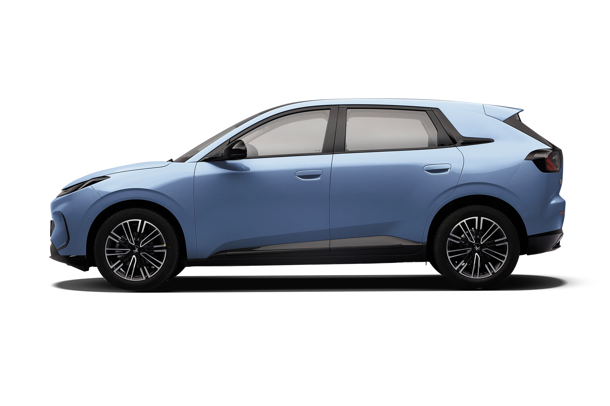
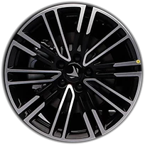
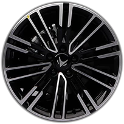
 Tecnologia
Tecnologia
Central Multimídia 15,6"
Cockpit Digital Inteligente
Tela flutuante de altíssima definição com Apple CarPlay, Android Auto sem fio e controle total do veículo.
 Conforto 180°
Conforto 180°
Espaço para a Vida
Bancos que Viram Cama 1,6 m
Bancos dianteiros que deitam em 180° integrados ao traseiro e porta-malas versátil de até 1.352 litros.
 Bem-Estar
Bem-Estar
Teto Panorâmico de Série
2.770 mm de Entre-Eixos
Ampla iluminação natural, isolamento acústico premium e assoalho 100% plano para quem vai atrás.
 Segurança ADAS
Segurança ADAS
Câmera 540° & Park Assist
Fácil na Cidade
Visão 540° com chassi transparente, estacionamento automático e 12 funções de segurança ativa nível 2.
 100% Elétrico
100% Elétrico
Recarga Rápida em 16 min
Até 300 km de Autonomia
Recarga ultrarrápida DC de 140 kW e eficiência energética pensada para acompanhar o seu ritmo diário.
/// MATRIZ DE PROTEÇÃO DE 10 CAMADAS
BATERIA AURORA
Proteção Tripla de Segurança e Performance Real de Confiança — Resistente ao fogo, resistente a impactos, à prova d’água e com autonomia genuína.
01 • Firewall 3D
44 Painéis de Aerogel & Isolamento Térmico
Cobertura de até 2,6 m² • “Bloquear, Desviar e Controlar”
Tecnologia 3 em 1 de manta térmica corta-fogo que alcança zero combustão espontânea, zero ignição e zero explosão em qualquer condição.
02 • Proteção em Nuvem 7×24h
Monitoramento Inteligente em Tempo Real
Supervisão 24/7 na Nuvem • Zero Degradação por 15 Anos
Monitoramento contínuo do status da bateria em tempo real na nuvem, aliado a uma vedação de alta precisão com zero degradação por 15 anos.
03 • Armadura Dupla
Estrutura de Alta Resistência a Impactos
Vigas de Reforço Transversais • Matriz de 10 Camadas
Quadro estrutural reforçado com vigas multidirecionais projetadas para absorver energia extrema de colisão e proteger o núcleo energético.
04 • Nível Submarino
Proteção Máxima Contra Água e Poeira
Certificação IP68 + IPX9K • Vedação Hermética Extrema
O mais alto nível de proteção contra imersão profunda, poeira e jatos de alta pressão, assegurando confiabilidade absoluta sob chuva severa.
05 • Escudo de Basalto
Blindagem Inferior de 7 Camadas
7 Camadas de Fibra de Basalto • Proteção Total de Base
Tecnologia de blindagem inferior em 7 camadas que protege a base da bateria contra detritos de pista, raspagens e impactos severos.
/// DESIGN DE CABINE & ACABAMENTO PREMIUM
Escolha o Seu Interior
Clique no veículo ou na prévia do acabamento de sua preferência para aproximar o ARCFOX T1 e entrar na cabine.
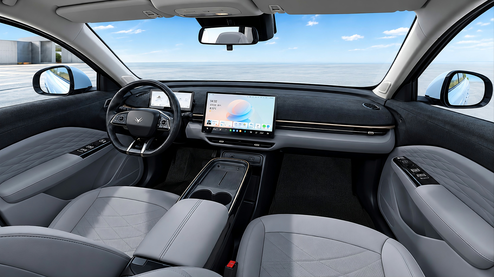
Opção 01 • Preto Noir Clique para entrarPreto Noir
Atmosfera esportiva e sofisticada em grafite escuro e preto noir com bancos perfurados em padrão diamante.

Entrar no Preto Noir
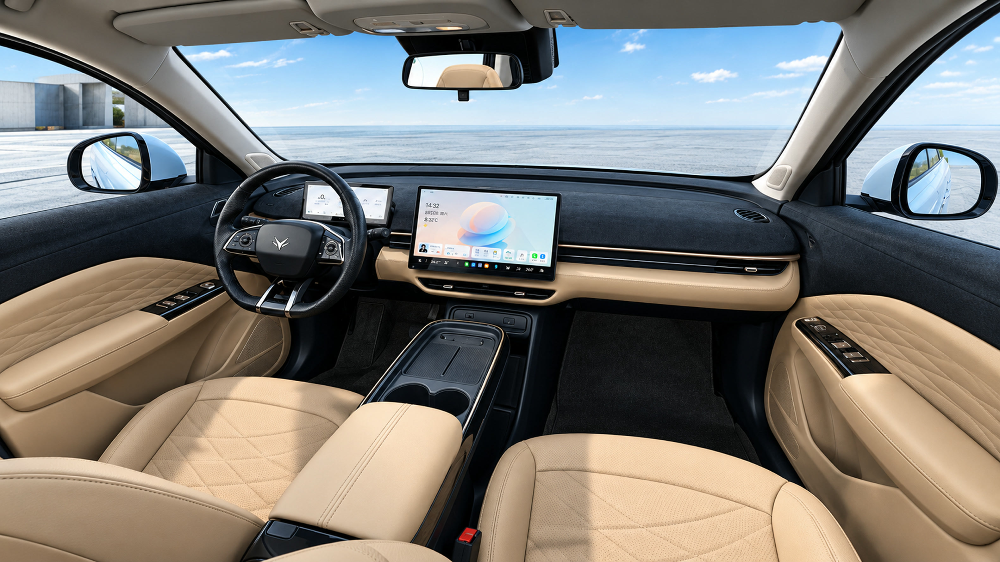
Opção 02 • Cinza Champagne Clique para entrarCinza Champagne
Luminosidade acolhedora e requinte contemporâneo em tom champagne com acabamento Soft-Touch.


Entrar no Cinza Champagne
/// WITH SMART ASSIST TECHNOLOGY
Manobras de Primeira. Dirigir Nunca Foi Tão Leve.
Domine espaços estreitos como um profissional — até quem está começando dirige com inteligência máxima desde o primeiro dia. Role para explorar cada tecnologia.

Turn with Ease
Manobre com Absoluta Leveza
Tecnologia inteligente de assistência de direção em baixa velocidade, inédita na categoria.
14.9
Relação Áurea de Direção
-30 cm
Diâmetro de Giro Reduzido
5,2 m
Raio Mínimo de Giro
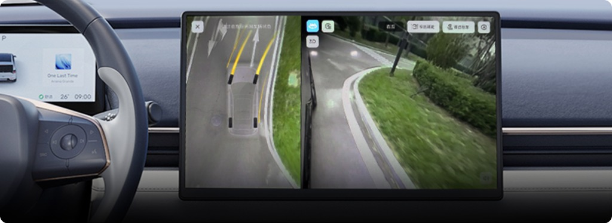
Visão Total Sem Pontos Cegos
Sistema de Câmeras 540° Surround View
Visão Panorâmica 360° combinada ao Chassi Transparente 180° diretamente na tela central de 15,6".
360°
Visão Panorâmica HD
+180°
Chassi Transparente
540°
Varredura Completa
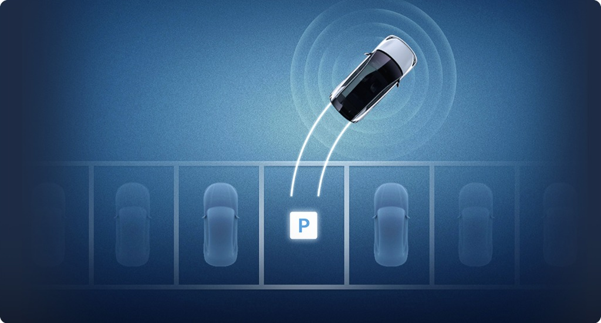
Nova Geração de Estacionamento Autônomo
Estacione com Precisão em Um Único Movimento
Diga adeus à ansiedade ao estacionar — leitura instantânea de vagas e manobra 100% automatizada.
58 Tipos
Cenários de Vagas
≥95%
Taxa de Sucesso
90%
Sucesso de Primeira
98%
Reconhecimento
50 m
Rastreamento de Ré
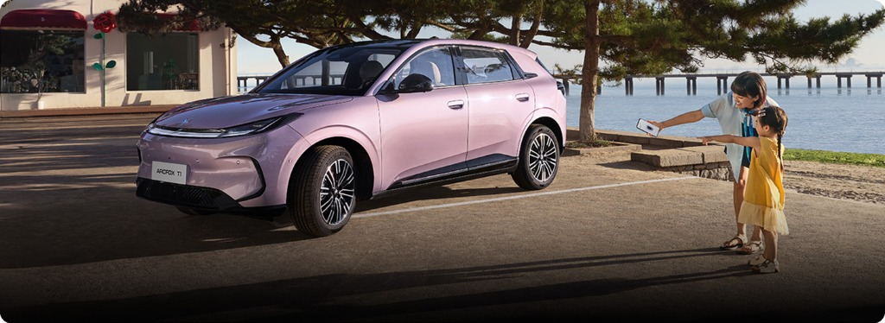
Liberdade na Ponta dos Dedos
Controle Seu Carro pelo Smartphone
Manobre o veículo à distância em vagas apertadas e localize seu ARCFOX T1 com um toque.
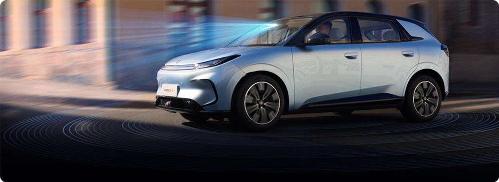
Inteligência Elevada • Proteção Contínua
Assistência de Condução Combinada Nível 2
Segurança ativa sempre ao seu lado com sensores e radares de alta precisão monitorando cada trajeto.
12 Funções
Segurança Ativa de Condução
6 Funções
Assistência Inteligente de Cruzeiro

Memória Inteligente de Preferências
7 Modos de Condução para Cada Jornada
A Memória Inteligente aprende suas preferências ao volante, tornando o compartilhamento em família simples e imediato.
Comfort
Eco
Sport
Custom
Ultra Eco
Wet
Adaptive
/// COMPARATIVO DE CATEGORIA
ARCFOX T1 Comparado com os Elétricos à Venda no Brasil
Mais espaço de porta-malas, maior entre-eixos e a recarga ultrarrápida mais potente do segmento. Clique em qualquer modelo abaixo ou filtre por categoria para comparar lado a lado.
Líder em Recarga Rápida
16 min • 140 kW
Até o dobro de potência de recarga DC em relação aos concorrentes diretos.
Líder em Porta-Malas
459 L de capacidade
Até +224 litros a mais que a concorrência, superando categorias superiores.
Líder em Espaço Interno
2.770 mm entre-eixos
Maior comprimento (4.337 mm) e maior largura (1.860 mm) para conforto real.
| Modelo | Motor | Potência | Autonomia | Recarga Rápida | Porta-Malas | Comprimento | Largura | Altura | Entre-Eixos |
|---|---|---|---|---|---|---|---|---|---|
|
Destaque • BAIC
Arcfox T1
|
100% elétrico (BEV) | 95 cv | até 300 km | 16 min - 140 kW | 459 L | 4.337 mm | 1.860 mm | 1.572 mm | 2.770 mm |
|
BYD Dolphin Mini
|
100% elétrico (BEV) | 95 cv | ~300 km | 30 min - 88 kW | 235 L | 3.780 mm | 1.710 mm | 1.540 mm | 2.500 mm |
|
BYD Dolphin
|
100% elétrico (BEV) | 204 cv | ~300 km | 30 min - 88 kW | 345 L | 4.290 mm | 1.770 mm | 1.570 mm | 2.700 mm |
|
Geely EX2
|
100% elétrico (BEV) | 116 cv | ~300 km | 21 min - 70 kW | 375 L | 4.135 mm | 1.805 mm | 1.580 mm | 2.650 mm |
01 / 04 • Protagonista
Destaque • BAIC
Arcfox T1
100% Elétrico (BEV) • Líder da Categoria
Recarga Rápida
16 min • 140 kW
Porta-Malas
459 Litros
Entre-Eixos
2.770 mm
Potência / Autonomia
95 cv • até 300 km
Comprimento × Largura
4.337 × 1.860 mm
Altura
1.572 mm
02 / 04 • Comparativo 1x1
T1 vs. Dolphin Mini
Arcfox T1 vs. BYD Dolphin Mini
Vantagem T1: +224 L de porta-malas (quase o dobro) • Recarga 14 min mais rápida (+52 kW) • +270 mm de entre-eixos.
Especificação
Arcfox T1
Dolphin Mini
Recarga Rápida
16 min (140 kW)
30 min (88 kW)
Porta-Malas
459 L
235 L
Entre-Eixos
2.770 mm
2.500 mm
Potência
95 cv
95 cv
Autonomia
até 300 km
~300 km
Comprimento
4.337 mm
3.780 mm
Largura
1.860 mm
1.710 mm
03 / 04 • Comparativo 1x1
T1 vs. BYD Dolphin
Arcfox T1 vs. BYD Dolphin
Vantagem T1: +114 L a mais de porta-malas • Recarga 14 min mais rápida (140 kW vs 88 kW) • +90 mm mais largo e +70 mm de entre-eixos.
Especificação
Arcfox T1
BYD Dolphin
Recarga Rápida
16 min (140 kW)
30 min (88 kW)
Porta-Malas
459 L
345 L
Entre-Eixos
2.770 mm
2.700 mm
Potência
95 cv
204 cv
Autonomia
até 300 km
~300 km
Comprimento
4.337 mm
4.290 mm
Largura
1.860 mm
1.770 mm
04 / 04 • Comparativo 1x1
T1 vs. Geely EX2
Arcfox T1 vs. Geely EX2
Vantagem T1: +84 L a mais de porta-malas • Dobro de potência de recarga (140 kW vs 70 kW) • +202 mm mais comprido e +120 mm de entre-eixos.
Especificação
Arcfox T1
Geely EX2
Recarga Rápida
16 min (140 kW)
21 min (70 kW)
Porta-Malas
459 L
375 L
Entre-Eixos
2.770 mm
2.650 mm
Potência
95 cv
116 cv
Autonomia
até 300 km
~300 km
Comprimento
4.337 mm
4.135 mm
Largura
1.860 mm
1.805 mm
Dados divulgados por cada fabricante para o Brasil. Autonomia dos elétricos: estimativa de uso; o número oficial de cada modelo é o da homologação do Inmetro. Preço e condições do Arcfox T1 serão divulgados pela BAIC no lançamento.
Compare de perto. Sinta a diferença ao volante.
Agende seu test drive do ARCFOX T1 na BAIC V12 ou tire suas dúvidas com um especialista.
Galeria de Fotos • Design & Lifestyle
Cada ângulo do ARCFOX T1 em detalhes.
Clique em qualquer foto para ampliar e navegar pela galeria
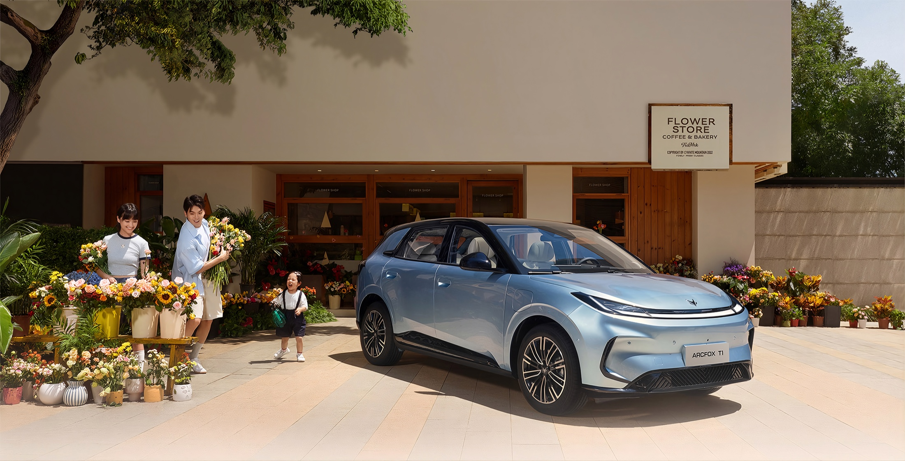
Clique para ampliar
Exterior • Lifestyle
Presença Urbana Sofisticada
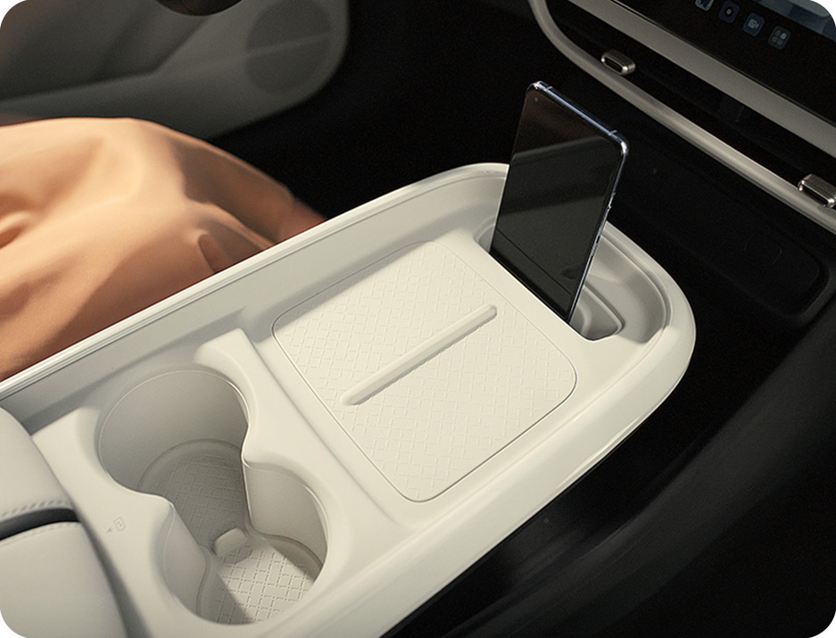
Clique para ampliar
Console Inteligente
Ergonomia & Praticidade
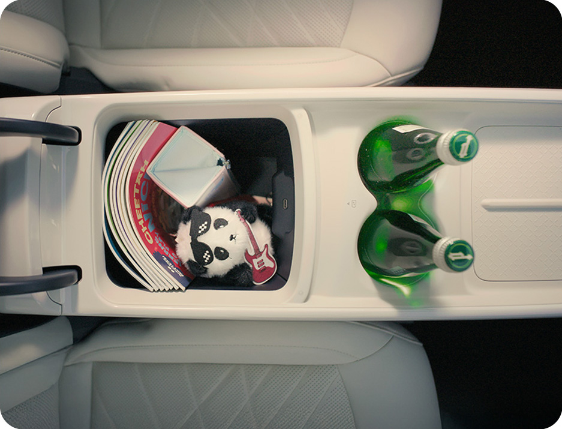
Clique para ampliar
Porta-Objetos
Organização Inteligente
Clique para ampliar
Tecnologia • Cabine
Cockpit Digital 15,6" + 8,8"
Clique para ampliar
Acabamento Interno
Nichos Modulares de Porta
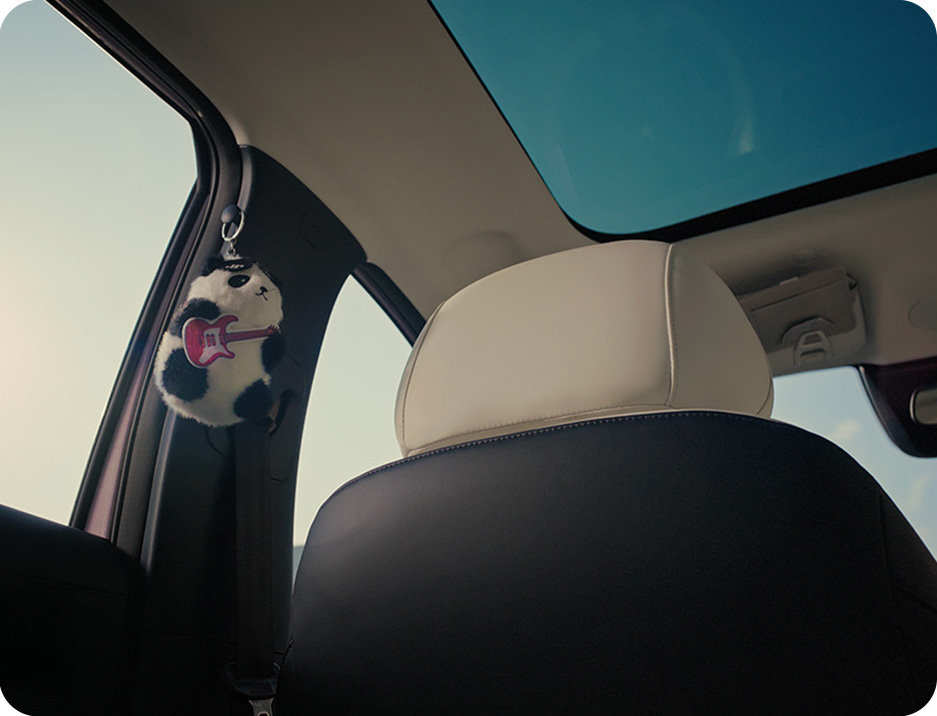
Clique para ampliar
Design Bicolor
Detalhes que Encantam
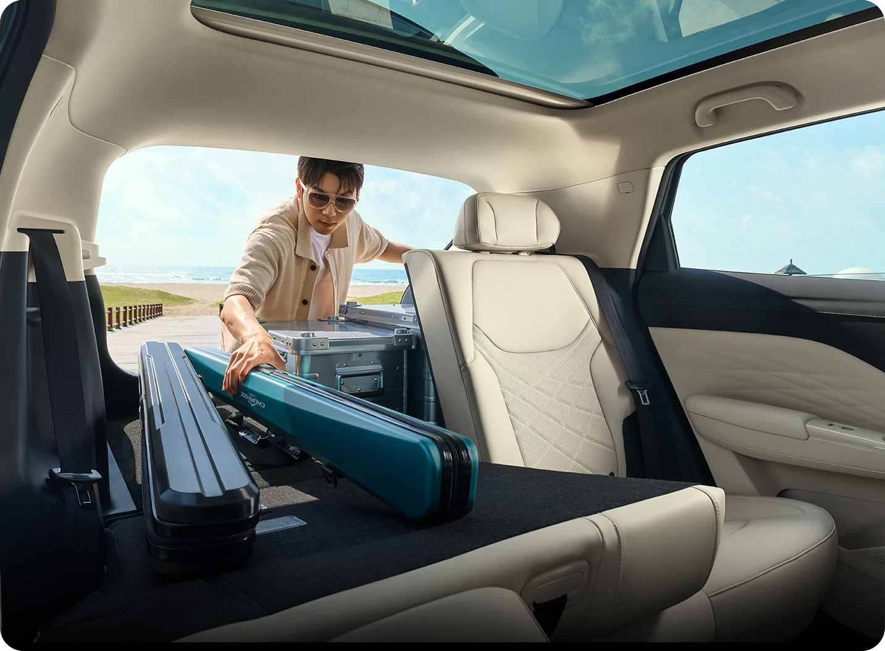
Clique para ampliar
Versatilidade
Espaço Modular de Carga
Clique para ampliar
Conforto First-Class
Bancos Reclináveis & Entre-Eixos de 2.770 mm
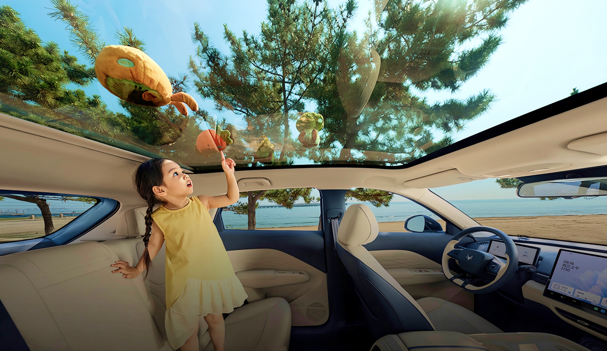
Clique para ampliar
Sky-View
Teto Panorâmico com Isolamento Térmico
Clique para ampliar
Performance 100% BEV
Condução Silenciosa e Autonomia de até 300 km
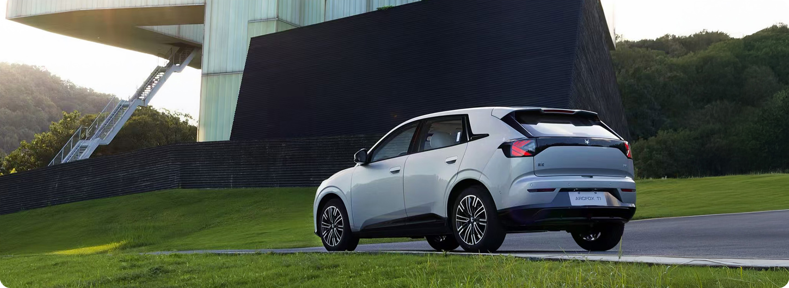
Clique para ampliar
Exterior • Aerodinâmica
Assinatura Luminosa Traseira em LED 3D
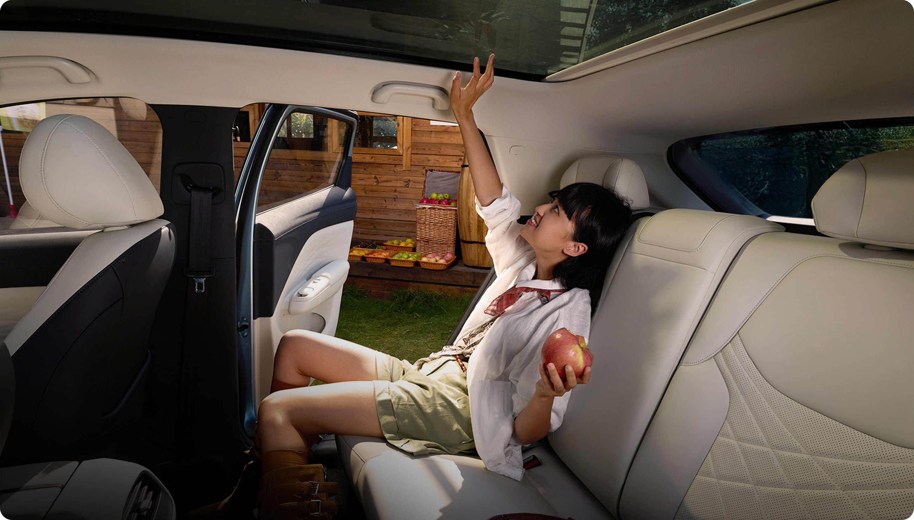
Clique para ampliar
Bem-Estar a Bordo
Luminosidade Natural em Toda a Cabine
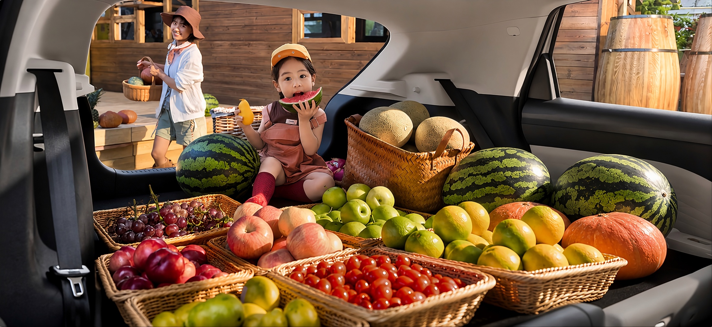
Clique para ampliar
Capacidade Líder • 459 L
Porta-Malas Amplo para Todas as Viagens
BAIC V12 • PERGUNTAS E RESPOSTAS
Tire suas dúvidas sobre o ARCFOX T1.
Reunimos as principais informações sobre chegada ao Brasil, autonomia, recarga rápida, espaço interno e comparativo com a categoria.
O ARCFOX T1 chega ao Brasil em novembro de 2026. Venha conhecer o carro, agende o seu teste drive!
O Arcfox T1 tem 95 cv e bateria de 42 kWh, contra os mesmos 95 cv e 44,9 kWh do concorrente, que custa R$ 149.990 e faz 291 km pelo Inmetro. O T1 declara 425 km no ciclo chinês CLTC, o que deve equivaler a algo perto de 295 km na etiqueta brasileira. O preço do T1 ainda não foi anunciado pela BAIC.
Os dados preliminares da Arcfox indicam até 425 km para o T1 no ciclo CLTC, o padrão de medição chinês. No Brasil vale a etiqueta do Inmetro, que usa critério mais rigoroso e costuma ficar cerca de 30% abaixo do CLTC. Pelo mesmo desconto, a expectativa é de algo perto de 295 km para o T1. A BAIC ainda não o homologou no Inmetro e em breve divulgará os números oficiais.
Em eletropostos de corrente contínua (DC), o ARCFOX T1 suporta potência de recarga ultrarrápida, permitindo recuperar de 30% a 80% da Bateria Aurora em apenas 16 minutos — quase metade do tempo exigido pelos principais rivais da categoria. Para uso residencial ou em shopping centers, também conta com recarga em corrente alternada (AC) de fácil conexão.
Graças à arquitetura 100% elétrica com assoalho plano, o ARCFOX T1 entrega 2.770 mm de entre-eixos (líder da categoria) dentro de uma carroceria ágil de 4.337 mm. O porta-malas oferece 459 litros de capacidade — superando concorrentes diretos — e chega a até 1.352 litros com os bancos traseiros rebatidos, além de permitir reclinar os bancos dianteiros para formar um lounge de descanso.
O modelo conta com Assistência Inteligente de Condução Nível 2 (ADAS) com 12 funções ativas, visão panorâmica 540° Surround View (360° ao redor + 180° de chassi transparente), Estacionamento Autônomo para 58 cenários de vagas, Controle Remoto via Smartphone e cockpit digital duplo com Central Multimídia de 15,6" integrada ao cluster de 8,8".
BAIC V12 • RESERVA DE TEST DRIVE
Chegada: Novembro 2026
Seja um dos primeiros a dirigir o ARCFOX T1.
Cadastre seu interesse ao lado para garantir atendimento prioritário na concessionária BAIC V12 e agendar sua experiência ao volante.
ATENDIMENTO EXCLUSIVO BAIC V12
Agende seu Test Drive
Preencha seus dados abaixo para receber novidades em primeira mão e agendar sua visita com um especialista.